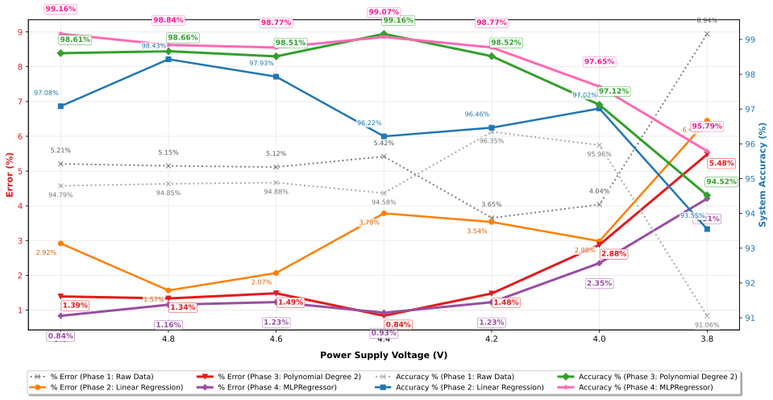
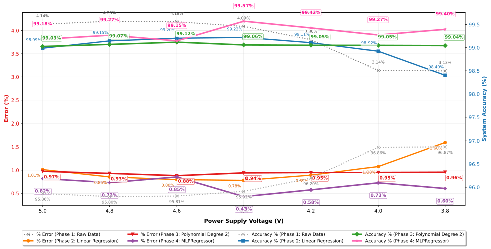

Isky Dwi Aprilianto
Fresh graduate Teknik Informatika dari Universitas Trisakti yang berfokus membangun sistem IoT end-to-end. Mulai dari integrasi sensor & aktuator, komunikasi data MQTT (HiveMQ), penyimpanan cloud (MongoDB Atlas), hingga visualisasi dashboard real-time yang interaktif.
Tentang Saya
Proyek IoT
Beberapa proyek pengembangan sistem internet of things yang telah saya selesaikan.
Hardware & sistem dalam tahap riset dan pengembangan
Program Pendanaan Riset Kampus — IoT Engineer
Mengembangkan sistem kendali otomatis penuh untuk hidroponik lanjutan. Memasang 4 sensor parameter air & udara serta merancang logika kontrol dosing otomatis untuk menstabilkan kondisi nutrisi tanaman. Menggunakan AI-assisted dev tools untuk mempercepat pengujian alur data end-to-end.
- Integrasi Sensor: pH, TDS, suhu air, dan DHT (suhu & kelembapan udara)
- Kontrol Dosing: 4 pompa dosing otomatis (pH Up, pH Down, Nutrisi A, Nutrisi B)
- Fitur Unggulan: Logika otomatisasi parameter & dashboard verifikasi alur data

Capstone Project — Hidroponik IoT
Proyek kelompok akhir studi yang memfokuskan pada pemantauan dan stabilisasi tingkat keasaman larutan air hidroponik. Berperan utama di divisi IoT hardware untuk kalibrasi sensor, pengkabelan, dan pemrograman ESP32.
- Integrasi sensor pH analog dengan proteksi noise pembacaan
- Kontrol pompa dosing pH dengan relay & feedback loop real-time
- Transmisi data ke platform web monitoring berkala
Samsung Innovation Camp (SIC) — "Canopya"
Berkolaborasi dalam tim merancang sistem atap pintar otomatis untuk merespons suhu ekstrim secara real-time. Memanfaatkan broker MQTT cloud untuk pengiriman pesan cepat dan database MongoDB Atlas untuk historis data.
- Komunikasi data latensi rendah via MQTT (HiveMQ broker)
- Penyimpanan database cloud MongoDB Atlas untuk log parameter lingkungan
- Dashboard monitoring Streamlit dengan kontrol manual aktuator dari jarak jauh
Penelitian Tugas Akhir
 Grafik 1: Regresi Linier vs Polinomial
Grafik 1: Regresi Linier vs Polinomial

Grafik 2: Uji Sensor pH 4502C
Grafik 3: Uji Sensor pH DFRobot V2Galeri Riset & Progress
Dokumentasi visual kegiatan survei pebisnis tanaman hias & hidroponik, proyek Capstone, pameran EXPO Universitas Trisakti, hingga penghargaan 10 besar Samsung Innovation Campus.
Tech Stack & Tools
Teknologi, perangkat keras, protokol, dan alat bantu pengembangan yang biasa saya gunakan.
Hardware & Embedded
Protokol & Konektivitas
Database & Cloud
Dashboard & Design
Pengalaman Organisasi & Kegiatan
Hubungi Saya
Tertarik untuk berkolaborasi atau mendiskusikan peluang kerja? Kirimkan pesan Anda!
Informasi Kontak
Silakan hubungi saya melalui saluran berikut untuk respon yang lebih cepat.